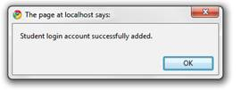
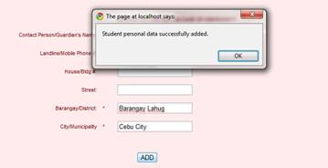
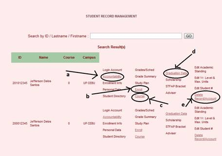
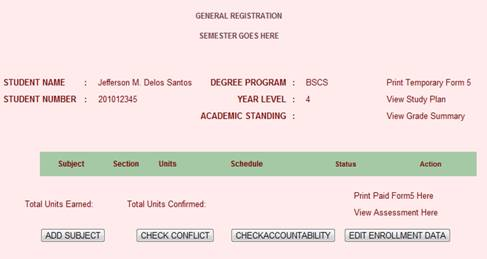

CSO ONLINE HELP
Add Student Record
- Click on the ‘add student record’ option.
- Enter the student number that you wish to add In the text field, then press ‘ADD’ button or press Enter.
- Click Click Here to Generate Password before adding entries.

- Fill the fields with the appropriate information. (NOTE: Fields with * should be filled up, and do not use apostrophe (‘)).
- After filling up, click the ‘ADD’ button at the bottom.
- A message box will appear confirming the status of the transaction. Click ‘OK’.

- You will be redirected to a new page where you can input the rest of the personal data of the student. Fill up fields, then click ‘ADD’.
- A message box will appear confirming the status of the transaction. Click ‘OK’.

Student Record Management
- Click on the ‘student record management’ option.
- To search for the student, enter in the text field either the student number, or the last name or the first name of the student. Then hit ‘GO’ or press Enter.
- The search results will appear in a new page.

- To add accountability
- Click on the ‘Accountability’ link (a). You’ll be redirected to a new page.
- Fill up the fields with the appropriate information then click the ‘ADD’ button.
- To enroll the student
- Click on the ‘Enroll’ link (b). You’ll be redirected to a page.

- Click the ‘ADD SUBJECT’ button to add some subjects for the student.
- Click ‘CHECK CONFLICT’ to view the student’s schedule, where any conflict is emphasized.
- Click ‘CHECK ACCOUNTABILITY’ to view the accountability/ies of the student.
- Click ‘EDIT ENROLLMENT DATA’ to view/edit/update the enrollment data of the student.
- To view/edit/update course
- Click on the ‘Course’ link (c). You’ll be redirected to a page.
- Fill up the fields with the appropriate data, then click ‘SAVE Student’s Course’ button.
- A message box will appear confirming success in editing/updating the course of the student. Click ‘OK’.
- To add/update graduation data
- Click on the ‘Graduation Data’ link (d). You’ll be redirected to a page.
- Fill up the fields with the appropriate data, then click ‘SAVE Student’s Graduation Data’.
- A message box will pop up confirming the addition or update of the graduation data of the student.
- To delete/remove account
- Click on the ‘Delete/Remove Account’ link (e).
- A message box will pop up affirming the success in removing the record of the student.
Student’s Accountability Module
- Click on the ‘Student’s Accountability Module’ option.
- Enter in the text field the student number or last name or first name of the student whose accountability you want to view. Click ‘Submit’ or press Enter.
- Accountabily/ies of the student in query will be presented in the table.
Subject Management Module
- Click the ‘Subject Management Module’ option.
-